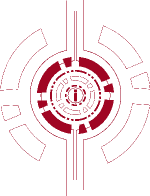

Created during the Spring 2013 3 Day Startup Event (an entrepreneurship education program designed for
university students with an emphasis on learning by doing), it was an attempt at desiging a web application
for lawyers, to elimnate the need for manually citing their references. Our team won the "CODE NINJAS" award
for our effort. I learned javascript and Django over the span of the 3 days. In addition I learned valuable
marketing and buisness aspects of startup companies, such as market validation and scalability. Our team
consisted of 2 computer science majors (including me), 1 graduate economics major, 1 electrical engineering major,
and 1 law student. I was one of 40 people selected to participate from a large pool of applicants.

This website is my first solo attempt in trying to create a website. The purpose of
this website is to showcase some of the past projects I have done and give a little
more information about myself than what is on my resume.
I am applying some of the knowledge that I have learned from my past endeavours,
such as using the Google Ape Engine to host my website, which I learned from my
software engineering class. I also started learning how to use new tools such as
Inkspace (free software, comparable to Adobe Illustrator) and GIMP 2 (free software,
comparable to Adobe Photoshop).
This is a work in progress and is constantly being updated and imporved through
the advice and opinion of others.
Major Update, 8/2/2013
I completely redesigned my website through the use of Twitter Bootstrap, which is
a predefined front-end framework. The logo on the splash page was created by a friend,
Laura Levisay, in the graphic design program at The University of Texas, as was the image
of the "about" tab. Laura also designed pdf templates which i drew from as inspiration for
the new website layout. as you can tell, from the following screen shots, the new design
is a huge improvment.
Old Design
A project for my Software Engineering class requiring us to learn how to use the
Google App Engine, the engine’s database, Django templates, and other tools to build a dynamic site that takes in information in an XML format and dynamically produces web pages. The site holds three different types of pages and interconnects them together based on relativity. My contribution to the project included helping out with all the backend work (site setup, handlers, import, export, database work, search function) as well as helping do the design work for the site. It is modeled after IMDb.
Python, XML, HTML, CSS, and using the Google App Engine and Django Templates were learned at the time the site was created.
This project occurred over the span of 5 weeks.
Created for the 2012 University of Texas at Austin EbayHackathon, it was an
effot to create a multiplatform mobile app that used geo-location and proximity to drop
and pick up money using Paypal so that it could be donated to charity.
This application was developed over the span of 16 hours.
I learned how to use Appcelerator Titanium (a platform for developing mobile, tablet,
and desktop applications) over the night.
Worked in a team of 2.